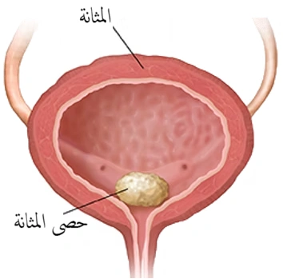

حصى المثانة - حصوة المثانة
مقدمة عن حصى المثانة - حصوة المثانة
تحدث حصى المثانة، أو حصوة المثانة في حال كانت واحدة، عندما تتراكم المعادن في مثانة الشخص، مما يؤدي إلى تكوين ترسبات و "حصى" صغيرة. وغالبًا ما تخرج حصوات المثانة الصغيرة بشكل طبيعي، خاصة هذا كانت عملية تفريغ المثانة طبيعية، ولكن الحصى الأكبر حجمًا قد تحتاج إلى علاج. وهذا يعني أن حصى المثانة قد لا تسبب أي أعراض إذا كانت صغيرة بما يكفي لخروجها من المثانة. لكن معظم الأشخاص الذين يعانون من وجود حصى المثانة يعانون من أعراض لأن الحصى إما تعمل على تهييج جدار المثانة أو تمنع تدفق البول، أي تؤدي الى حدوث أعراض انسداد.
تحدث معظم حالات حصى المثانة عند الرجال الذين تبلغ أعمارهم 50 عامًا أو أكثر بسبب ارتباطها بتضخم البروستاتا. ولكن يمكن أن يصاب الرجال والنساء بحصوات المثانة. من النادر أن تحدث حصى المثانة في الأطفال. لكن في الأطفال، يمكن أن تؤدي إلى التبول اللاإرادي، ( معلومات شاملة عن التبول الليلي الاارادي )، وقد يعاني بعض الأولاد من الانتصاب المستمر والمؤلم الذي يمكن أن يستمر لساعات نتيجة لحصى المثانة.
تشكل حصى المثانة ما يقرب من 5 في المائة فقط من جميع حصى المسالك البولية، إلا أنها مسؤولة عن 8 في المائة من الوفيات المرتبطة بحصوات المسالك البولية في الدول المتقدمة. وهذه النسب غالباً ما تكون أعلى في الدول النامية منها في الدول العالم الأول.
أسباب تكون حصوة في المثانة
إن السبب وراء حدوث حصى المثانة عادة ما يكون متعدد العوامل. ويمكن تصنيف مسببات حصى المثانة إلى أسباب أولية أو أسباب ثانوية أو حصوة مهاجرة من مكان آخر، تحديداً حصى الكلى أو حصى الحالب.
معلومات شاملة عن حصى الكلى / معلومات شاملة عن حصى الحالب- تحدث حصى المثانة الأولية في غياب أمراض أخرى في المسالك البولية، وعادة ما تُرى عند الأطفال في المناطق التي تعاني من نقص المياه وقلة شرب السوائل والإسهال المتكرر واتباع نظام غذائي يفتقر إلى البروتين الحيواني. وهذا المسبب لحصوة المثانة نادر جداََ في الأردن.
- أما حصى المثانة الثانوية فتتكون في وجود تشوهات أخرى أو مشاكل مزمنة في المسالك البولية، والتي تشمل انسداد مخرج المثانة، وخلل المثانة العصبي، وبكتيريا البول المزمنة، والأجسام الغريبة (بما في ذلك القسطرة)، وفي حالات جيوب المثانة، و بعد عمليات توسيع المثانة أو تحويل مسار البول. في البالغين، يعد انسداد مخرج المثانة هو العامل الأكثر شيوعًا لتكوين حصوة في المثانة ويمثل ما يقارب النصف الى ثلاثة أرباع من حالات حصى المثانة.
- حصر المثانة المهاجرة أو المنتقلة والقادمة من مكان آخر غير المثانة؛ هي تلك التي انتقلت من المسالك البولية العلوية حيث تكونت، وقد تعمل بعد ذلك كحاضنة لنمو حصوة كبيرة في المثانة أو حدوث حصى المثانة بأعداد وأحجام مختلفة. وفي هذا النوع عادة ما يكون المرضى الذين يعانون من حصى المثانة هم أكثر عرضة لوجود تاريخ من حصى المسالك البولية العلوية وعوامل الخطر التي قد تؤدي إلى تكوينها.
أعراض حصى المثانة
- تكرار البول. ( تكرار البول )
- الدم في البول أو البيلة الدموية (الذي عادة ما يكون في المرحلة النهائية). ( البيلة الدموية )
- حرقة البول و/أو ألم فوق العانة، والذي يكون أسوأ نحو نهاية التبول. ( معلومات شاملة عن حرقان البول )
- قد تؤدي الحركة المفاجئة وممارسة التمارين الرياضية إلى تفاقم هذه الأعراض أو حدوثها على شكل هجمات.
- أعراض المثانة العصبية أو زيادة نشاط المثانة، حيث يتواجد فرط نشاط العضلة الدافعة في أكثر من ثلثي المرضى الذكور البالغين الذين يعانون من حصى مثانية وهو أكثر شيوعًا بشكل ملحوظ في المرضى الذين يعانون من حصى المثانة الأكبر حجمًا.
- التهابات المسالك البولية المتكررة.
-
أما في الأطفال فبالإضافة لما سبق، قد يعاني الطفل أيضاً من:
- شد العضو الذكري عند الحاجة للذهاب لدورة المياه.
- صعوبات في التبول أو احتباس البول.
- سلس البول او التبول اللاارادي.
- هبوط المستقيم (نتيجة للإجهاد بسبب تشنجات المثانة).
- كما ويمكن اكتشاف حصى المثانة عند الأطفال عرضيًا في بعض الحالات عند اجراء تصوير لأسباب أخرى.
أسباب وأعراض حصى المثانة - التشخيص والعلاج
طرق التشخيص الحديثة لحصى المثانة
- بالإمكان استخدام التصوير بالأشعة السينية أو التصوير بالألتراساوند لتحديد ما اذا كان هنالك حصوة في المثانة أم لا.
- التصوير الطبقي المقطعي، يعتبر أعلى دقة في تشخيص حصى المثانة وذلك للتمكن من ايجاد حصى المثانة الشفافة بالإضافة للكشف عن حصى المسالك البولية العلوية مثل حصى الكلى أو حصى الحالب.
-
تنظير المثانة وهو الإجراء الأعلى دقة من الناحية التشخيصية، بالإضافة للتمكن من رؤية مشاكل أخرى قد تتصاحب مع حصى المثانة مثل سرطان المثانة.
معلومات شاملة عن تنظير المثانة بالمنظار المرن
تشخيص مسببات حصى المثانة:-
يتم النظر في سبب حصوة المثانة قبل علاج حصوة المثانة، حيث إن القضاء على السبب الكامن سوف يقلل من معدلات تكرار الإصابة. بالإمكان القيام بما يلي قدر الإمكان قبل (أو أثناء) علاج حصوة المثانة:
- الفحص السريري؛ وهو مهم للغاية لتحديد مشاكل الأعضاء التناسلية أو مشاكل وأمراض الأعصاب في حال وجودها.
- فحوصات تكوين حصى المسالك البولية.
-
فحص تدفق البول وتفريغ المثانة.
معلومات عن فحص تدفق البول - تصوير الإحليل بالمادة الملونة.
أفضل طرق علاج حصى المثانة
-
العلاج التحفظي؛ متى يجب علاج حصى المثانة؟
بالإمكان ترك حصى المثانة، والتي تأتي نتيجة عن حصى الكلى أو حصى الحالب أي حصوة المثانةالمهاجرة، عند البالغين دون علاج، وخاصةً الحصى الصغيرة التي لا تظهر عليها أعراض. معدلات مرور الحصوات تلقائيًا غير معروفة، لكن الأخذ بمعدلات الخروج التلقائي في حصى الحالب تشير إلى أن حصوة المثانة التي يقل حجمها عن 1 سم من المرجح أن تخرج لوحدها في حال عدم وجود مشاكل طبية أخرى في المسالك البولية. أي في حال غياب التبول اللاإرادي، أو حالات انسداد المسالك البولية (مثل تضخم البروستات الحميد)، أو القسطرة طويلة الأمد. معلومات شاملة عن حصى الحالب
أمَّا عندما تكون حصى المثانة من الأنواع الأولية أوالثانوية؛ (أي أن حصوة المثانة تكونت في المثانة ولم تأتي من مكان آخر)، فإنها عادة ما تكون مصحوبة بأعراض ومن غير المرجح أن تمر تلقائيًا؛ لذلك فإن العلاج لمثل هذه الحصى هو الأفضل، ولا ينصح بمراقبتها.
-
عمليات تفتيت حصى المثانة:-
كما هو الحال في الكثير من الإجراءات والعمليات الحديثة فقد تم اعتماد تقنيات طفيفة التوغل لإزالة حصى المثانة على نطاق واسع في العالم؛ وذلك لتقليل خطر حدوث المضاعفات وتقصير مدة الإقامة في المستشفى والنقاهة. حيث يمكن علاج حصى المثانة أو حصوة المثانة الضخمة إما بالجراحة المفتوحة أو بالمنظار الجراحي (ثقوب صغيرة في البطن)،أو الجراحة التنظيرية عبر مجرى البول (أي تنظير المثانة مع تفتيت حصى المثانة داخلياً) أو عبر الجلد (أي بزل حصى المثانة عبر ثقب صغير في الجلد) أو تفتيت حصى المثانة بالموجات الصادمة.
-
إزالة حصى المثانة بالجرح المفتوح (استئصال حصى المثانة فوق العانة) - Suprapubic cystolithotomy
يعتبر استئصال حصى المثانة فوق العانة المفتوح فعالاً للغاية، وهي الطريقية التقليدية والتي ما زالت معتمدة في الكثير من المستشفيات حيى الآن. ولكنها ترتبط بالحاجة إلى القسطرة وإقامة أطول في المستشفى لدى كل من الكبار والأطفال مقارنة بجميع طرق إزالة حصى المثانة الأخرى. لكن مدة الإقامة واستخدام القسطرة لا يكون طويلاً في حال عدم وجود التهابات أو مشاكل سابقة متصاحبة مع حصى المثانة.
-
تفتيت حصى المثانة عن طريق تنظير المثانة - Transurethral cystolithotripsy / cystolitholapaxy
حيث يتم استخدام منظار مثانة خاص بحصى المثانة ويتم تفتيت الحصى بمعدات خاصة أو أحياناً باستخدام الليزر. وتعتبر هذه العملية هي الأكثر انتشاراً في المستشفيات وذلك لطبيعتها طفيفة التوغل ولفعاليتها العالية، لكنها تتطلب وقت أطول للعملية كلما ازداد حجم حصوة المثانة.
-
تفتيت حصى المثانة عن طريق الجلد (بزل حصى المثانة) - Percutaneous cystolithotripsy
ويتم إجراء هذه العملية عن طريق ثقب في الجلد فوق المثانة؛ ومن ثم تفتيت حصوة المثانة واستخراج الحصى على شكل قطع صغيرة، ولا يوجد لهذه العملية ايجابيات اضافية عن تفتيت حصى المثانة عن طريق الإحليل الا في حال وجود تضيق في الإحليل أو وجود مشاكل أخرى في مخرج المثانة قد يعيق تنظير المثانة. وهذه العملية تشبه عملية بزل حصى الكلى عن طريق الجلد - معلومات شاملة عن عملية بزل حصى الكلى
-
تفتيت حصى المثانة بالموجات الصادمة - ESWL:-
بالإمكان إجراء تفتيت الحصى بالموجات الصادمة في حصى المثانة في حال كانت صغيرة الحجم. ويتطلب التفتيت عدة جلسات لكن في حال نجاح التفتيت بالموجات الصادمة فإن المضاعفات تكون أقل من العمليات الأخرى. معلومات شاملة عن تفتيت الحصى بالموجات الصادمة
-
استخراج حصى المثانة بالمنظار الجراحي - Laparoscopic cystolithotomy
يتم إجراء هذه العملية عادة اذا كان هناك حاجة لإجراءات أخرى للمثانة أو البروستات؛ مثل استئصال البروستات بالمنظار بسبب تضخم البروستات الحميد الضخمة والتي تترافق مع حصى المثانة، أو في حال استئصال جيوب المثانة مع وجود حصى المثانة والتي يتم ازالتها مع استئصال الجيوب المثانية بالمنظار البطني الجراحي.
-
ملخص سريع عن حصى المثانة
حصى المثانة هي مشكلة شائعة تصيب الرجال والنساء نتيجة تراكم المعادن في المثانة، مما يؤدي إلى أعراض مثل الألم، وتكرار التبول، وصعوبة الإفراغ الكامل. تشمل العلاجات الحديثة تقنيات مثل تفتيت الحصى بالموجات الصادمة والجراحة التنظيرية.
إذا كنت تعاني من أعراض حصى المثانة، لا تتردد في طلب الاستشارة مع د. جاد الصمادي للحصول على أفضل العلاجات المتاحة.
تواصل معنا للحصول على أفضل العلاجات لحصى المثانة
إذا كنت تعاني من حصى المثانة أو تحتاج إلى استشارة طبية دقيقة، يمكننا مساعدتك في تشخيص حالتك وتقديم الحلول المناسبة. يقدم د. جاد الصمادي أحدث التقنيات لضمان راحتك وشفائك.
- للاتصال المباشر: 962778089234+
- للتواصل عبر الواتساب: 962778089234+
- لإرسال بريد إلكتروني: Jadsmadi@live.com
يمكنك أيضًا حجز موعد بسهولة من خلال صفحة الحجوزات.
مراجع حصى المثانة
- Kum, F., Mahmalji, W., Hale, J., Thomas, K., Bultitude, M., & Glass, J. (2016). Do stones still kill? An analysis of death from stone disease 1999-2013 in England and Wales. BJU international, 118(1), 140–144. https://doi.org/10.1111/bju.13409
- Schwartz, B. F., & Stoller, M. L. (2000). The vesical calculus. The Urologic clinics of North America, 27(2), 333–346. https://doi.org/10.1016/s0094-0143(05)70262-7
- Ramello, A., Vitale, C., & Marangella, M. (2000). Epidemiology of nephrolithiasis. Journal of nephrology, 13 Suppl 3, S45–S50.
- Halstead S. B. (2016). Epidemiology of bladder stone of children: precipitating events. Urolithiasis, 44(2), 101–108. https://doi.org/10.1007/s00240-015-0835-8
- Takasaki, E., Suzuki, T., Honda, M., Imai, T., Maeda, S., & Hosoya, Y. (1995). Chemical compositions of 300 lower urinary tract calculi and associated disorders in the urinary tract. Urologia internationalis, 54(2), 89–94. https://doi.org/10.1159/000282696
- Philippou, P., Moraitis, K., Masood, J., Junaid, I., & Buchholz, N. (2012). The management of bladder lithiasis in the modern era of endourology. Urology, 79(5), 980–986. https://doi.org/10.1016/j.urology.2011.09.014
- Douenias, R., Rich, M., Badlani, G., Mazor, D., & Smith, A. (1991). Predisposing factors in bladder calculi. Review of 100 cases. Urology, 37(3), 240–243. https://doi.org/10.1016/0090-4295(91)80293-g
- Millán-Rodríguez, F., Errando-Smet, C., Rousaud-Barón, F., Izquierdo-Latorre, F., Rousaud-Barón, A., & Villavicencio-Mavrich, H. (2004). Urodynamic findings before and after noninvasive management of bladder calculi. BJU international, 93(9), 1267–1270. https://doi.org/10.1111/j.1464-410X.2004.04815.x
- Yang, X., Wang, K., Zhao, J., Yu, W., & Li, L. (2014). The value of respective urodynamic parameters for evaluating the occurrence of complications linked to benign prostatic enlargement. International urology and nephrology, 46(9), 1761–1768. https://doi.org/10.1007/s11255-014-0722-1
- Childs, M. A., Mynderse, L. A., Rangel, L. J., Wilson, T. M., Lingeman, J. E., & Krambeck, A. E. (2013). Pathogenesis of bladder calculi in the presence of urinary stasis. The Journal of urology, 189(4), 1347–1351. https://doi.org/10.1016/j.juro.2012.11.079
- Donaldson, J. F., Ruhayel, Y., Skolarikos, A., MacLennan, S., Yuan, Y., Shepherd, R., Thomas, K., Seitz, C., Petrik, A., Türk, C., & Neisius, A. (2019). Treatment of Bladder Stones in Adults and Children: A Systematic Review and Meta-analysis on Behalf of the European Association of Urology Urolithiasis Guideline Panel. European urology, 76(3), 352–367. https://doi.org/10.1016/j.eururo.2019.06.018
- Javanmard, B., Fallah Karkan, M., Razzaghi, M. R., Ghiasy, S., Ranjbar, A., & Rahavian, A. (2018). Surgical Management of Vesical Stones in Children: A Comparison Between Open Cystolithotomy, Percutaneous Cystolithotomy and Transurethral Cystolithotripsy With Holmium-YAG Laser. Journal of lasers in medical sciences, 9(3), 183–187. https://doi.org/10.15171/jlms.2018.33
- Davis, N. F., Donaldson, J. F., Shepherd, R., Neisius, A., Petrik, A., Seitz, C., Thomas, K., Lombardo, R., Tzelves, L., Somani, B., Gambarro, G., Ruhayel, Y., Türk, C., & Skolarikos, A. (2022). Treatment outcomes of bladder stones in children with intact bladders in developing countries: A systematic review of >1000 cases on behalf of the European Association of Urology Bladder Stones Guideline panel. Journal of pediatric urology, 18(2), 132–140. https://doi.org/10.1016/j.jpurol.2022.01.007
- Autorino, R., Zargar, H., Mariano, M. B., Sanchez-Salas, R., Sotelo, R. J., Chlosta, P. L., Castillo, O., Matei, D. V., Celia, A., Koc, G., Vora, A., Aron, M., Parsons, J. K., Pini, G., Jensen, J. C., Sutherland, D., Cathelineau, X., Nuñez Bragayrac, L. A., Varkarakis, I. M., Amparore, D., … Porpiglia, F. (2015). Perioperative Outcomes of Robotic and Laparoscopic Simple Prostatectomy: A European-American Multi-institutional Analysis. European urology, 68(1), 86–94. https://doi.org/10.1016/j.eururo.2014.11.044